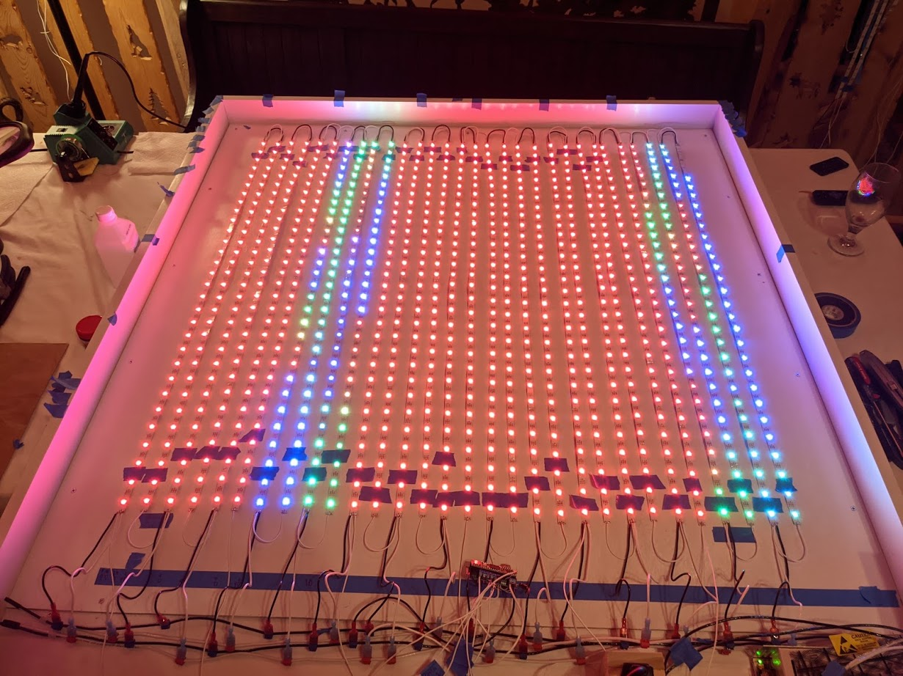
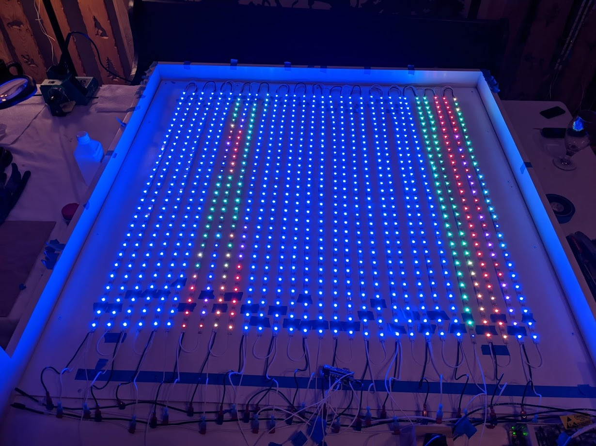
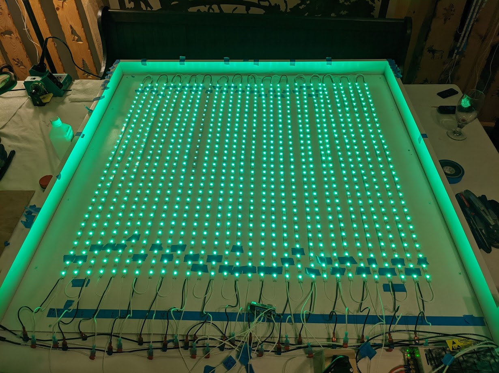
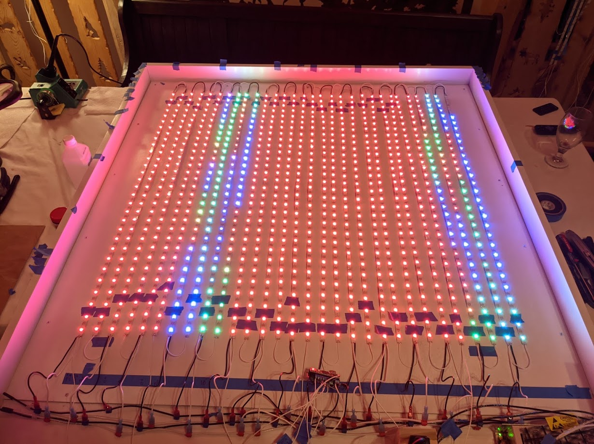
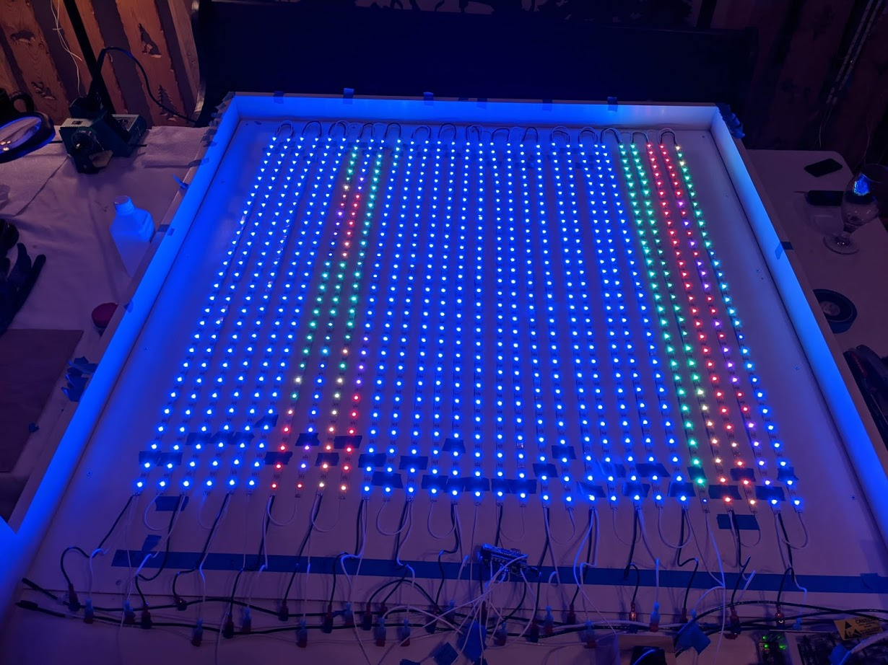
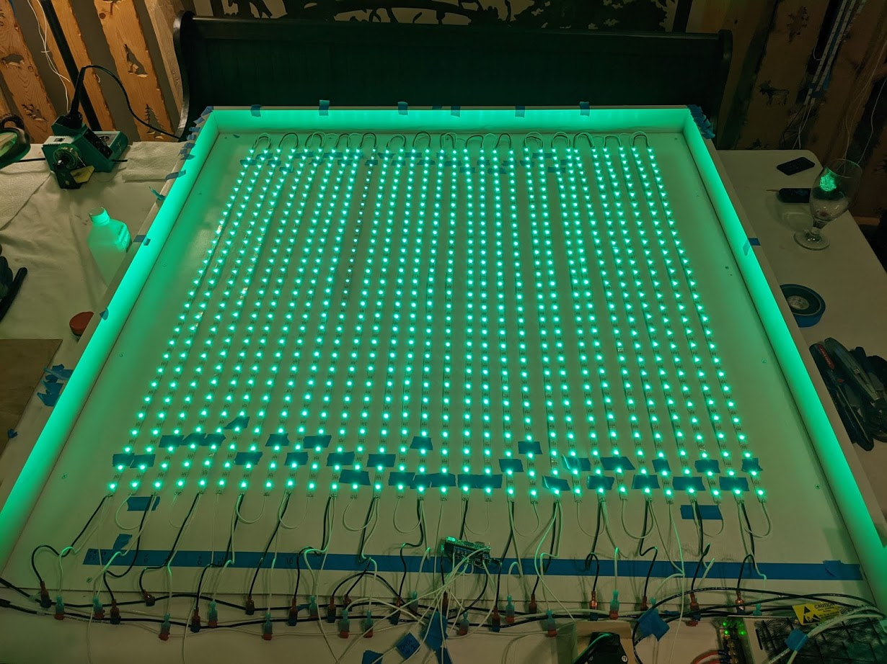
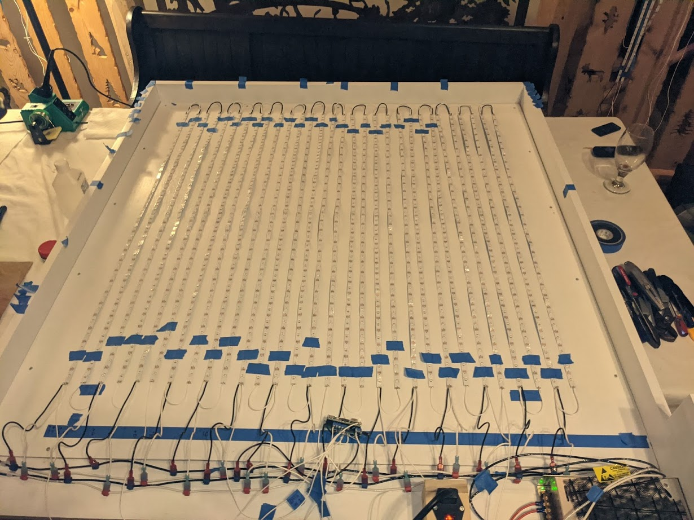
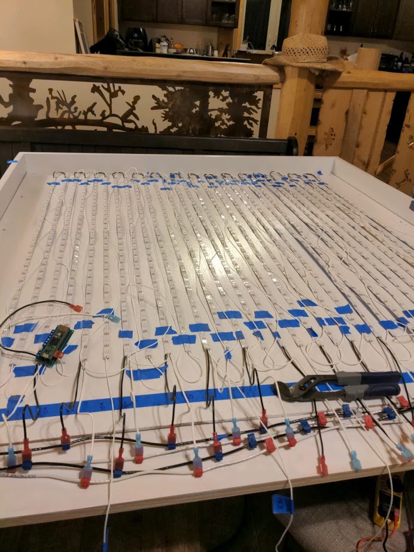
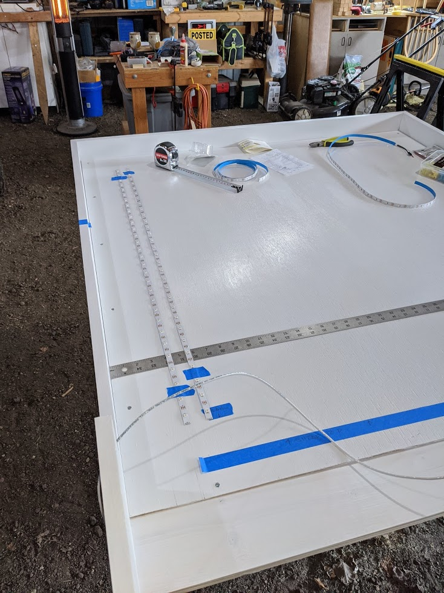

The LED Board - FUll Display of Lights



\Something goes here.



\Something goes here.

\Something goes here.

\So this part by far took the most amount of time to complete. I first had to cut the strips into 30 LEDs per strip (came in packs of 150 LEDs per strip). I then used a simple soldering kit to solder on the ground (black wire 12awg), data (white wire 18awg), and power (white wire 12awg). All odd strips received a ground and power at the bottom and connected with power and ground to the next strip at the tops of both, creating an upside down U. I then ran a long 28awg white wire for data from the top of the first strip to the bottom of the second strip, creating a Z. This way, the data would be display starting from the bottom of each strip and continuing up to the top of the strip. To keep things simpler, we decided to split the strips into 6 groups of 5 strips each to distribute data evenly. The power was distributed to 15 groups of 2 strips each. Strips 1, 6, 11, 16, 21, and 26 received new data wires and strips 5, 10, 15, 20, 15, and 30 were the end of each data group. It was hard to keep ths layout straight and there were several mistakes that had to be fixed later. With soldering, I learned it is important to have the right temperature, use lots of flux on the wires, and if you do not properly clean the solder5 tip (and the material is cheap), you can actually melt the tip off. Once we had the strips connected, we added a bus at the bottom and alternated power/ground between the two busses for each strip. We connected the busses to the power supply and the power supply to the power supply. We inserted the data wires into the Teensy 4.1 and had a small program tellign the lighs to flash red, green, blue, off, and repeat. We started with the first group of five and when that proved to work, we added the next group, tested, and repeated the process as each section came to life. We did have one incident in which the Teensy was dropped directly on the exposed wire, causing a small spark. We ended up killing a couple strips of LEDs as you can see in the picture below.

After most of the board was assembled, except for the LED back board itself, I painted all the wooden parts with a white semi-gloss paint. I put three layers on carefully to avoid any thick areas of paint. I also painted the LED board but only the front. I let each layer dry for about 45 minutes (I saved time by alternating between the backboard and the frame). Once the paint was dry, I attached the backboard to the frame. I used steel screws to attach the backboard to the front of the frame. One issue I faced when nailing in the board was its inability to lay flat. The board we chose had a rather definining bow in the very middle of the board. We fixed this problem by carefully placing the screws along the boarder vof the board. I also want to mention we attached the POWER SUPPLY to the bottom right side of the frame, below the level of visibility as to not be seen once we add the front cover to hide the extra components and focus on the LEDs themselves. I also laid out a few strips of light to see where I wanted to place them. I ended up giving each light strip the same amount of space as one LED had to the next LED on the same strip (1.25 in.). The idea would be for all LEDs to appear to be part of a prrecise grid where the height and width was t6he same from one LED to the next. I also planned to leave space on the sides, top, and bottom to account for wiring and allowing people to see the lights nearly 18- degrees around the front of the board.

This project took me about 5 hours to complete. I had to go to the store and buy my materials:
| Qnty | Item | Material |
|---|---|---|
| 1 | 1x3x48 in. board | poplar |
| 1 | 1x6x96 in. board | poplar |
| 1 | 1x8x96 in. board | poplar |
| 2 | 1x2x96 in. board | pine |
| 1 | 48x48 in. panel | pine |
| 1 | 1.25 in. MP screws | steel |
I chose poplar wood over pine because pine is much easier to scratch up when working with the material. I started cut a 1x3x96 in. board into two pieces (1x3x48 in.) and cut the edges at 45-degree angles. I cut the side boards at 1x6x56 in. I then trimmed 3 in. off the 6 in. width for only 48 in. of the 1x6x56 in. board so the side boards would match the top board (at 3 in.) and leave the last 8 in. of the 1x6x56 in. board 6 in. wide. The reason was to create a box for all the “behind-the-scenes” electrical work will be placed. I then cut two 1x6x48 in. boards to go on the top and bottom of the box portion of my frame. I used two screws to connect all the sides together (2 x 4 = 8 screws). I then added some 1x2x46.5 in. boards to sit inside the frame at the top and sides so I can nail the panel on (this is where the LED lights will go). Lastly, I had to cut 1.5 in. off my 48x48 in. panel on the top and right side so it can fit inside the frame. The results are shown below. The last step is to paint it white so we can get started on adding the LEDs.

Have you ever wanted to experience music in a different way? Have you ever wondered how music looks, tastes, or feels? Well… taste might be a bit hard to create but what we can create is a way for you to visualize music as if it were alive right in front of you. Picture an EDM concert – the crowd dancing, the DJ behind his booth, the lights flashing to the beat, and the big colors screen behind the DJ. With this DIY project, you will be able to recreate this experience I your own home. The goal with the LED Light Wall is to display music visually so you can “see” the beats, the vocals, and the sound of music. My idea was inspired by a shop called Cyberdog in London that I visited back in 2017. There was a DJ booth with an equalizer display located behind. When the DJ played music, the lights would display an equalizer, or a spectrum of low and high frequencies whenever they were detected by a microphone sensor. The bass, or low frequencies, would show up on the left side and the vocals and high pitches, or higher frequencies, would show up in the middle and right side of the spectrum. I could tell when beats were stronger, or vocals were louder by watching the lights increase or decrease when music became quieter. Today, I not only want to recreate this visualization of music but also push my creative mind to design more abstract and immersive ways to visualize music. Stay tuned to learn more about how to make your own LED Light Wall as I will be sharing my step-by-step process with you in upcoming blogs.